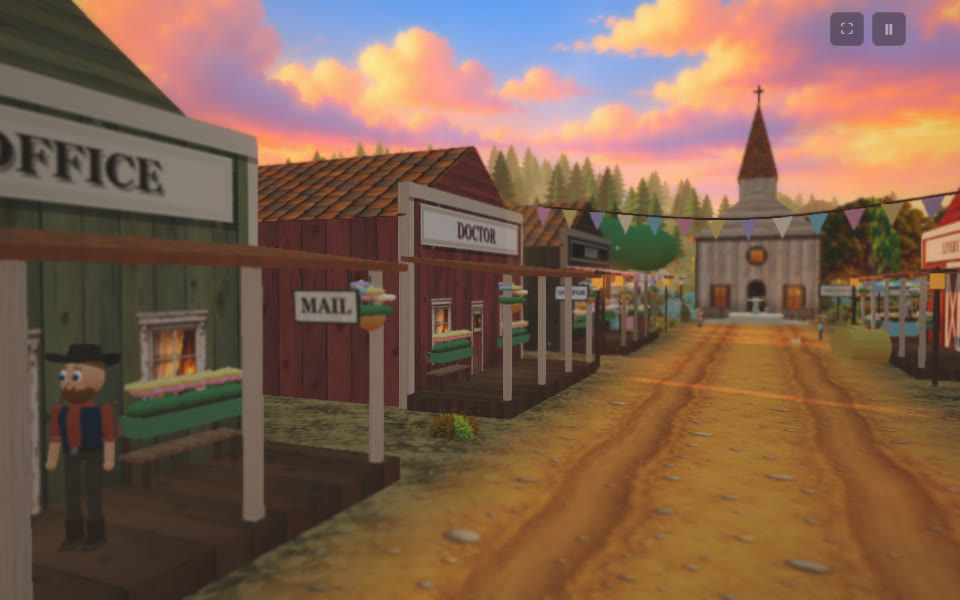
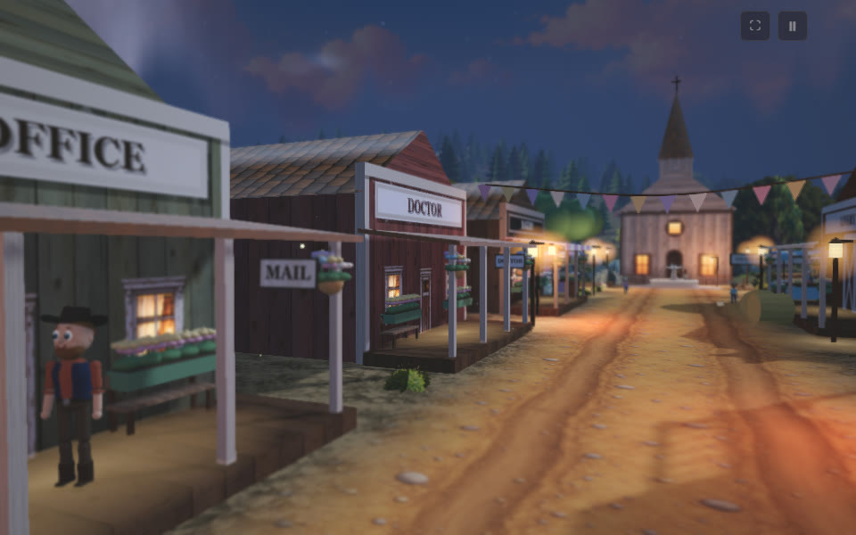
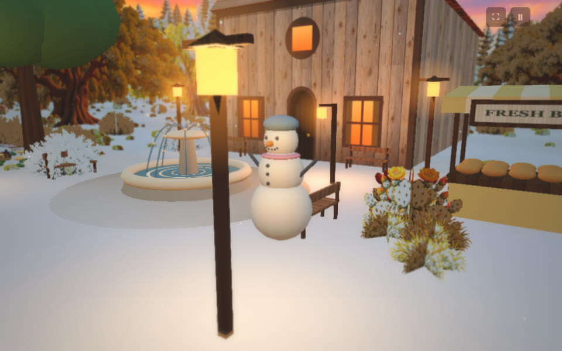
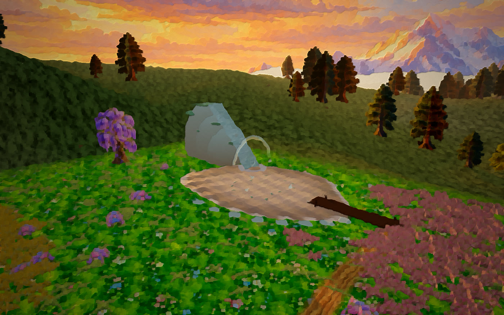
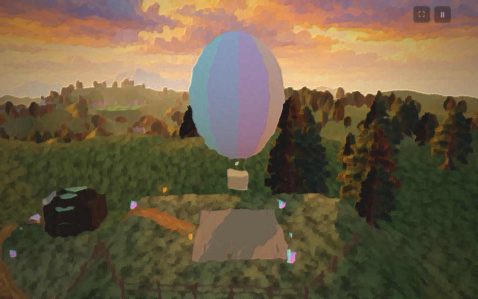
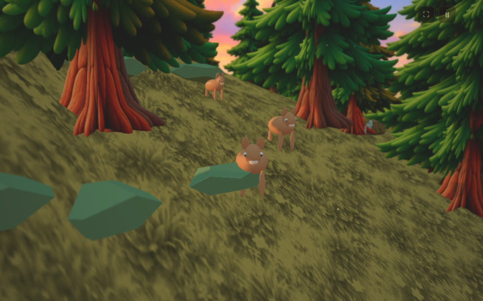
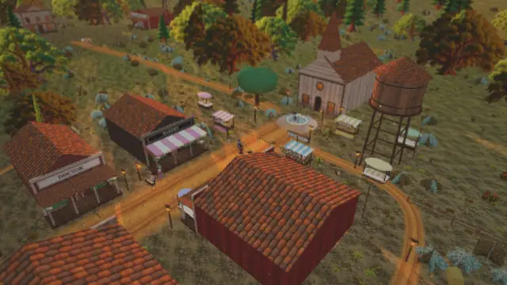
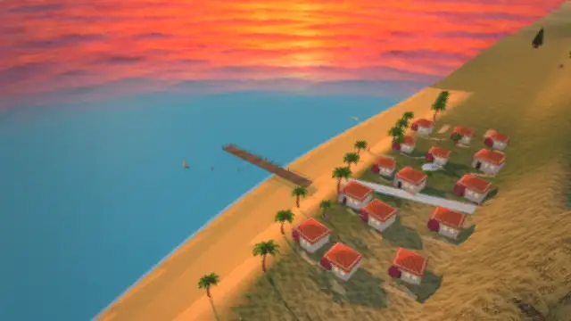
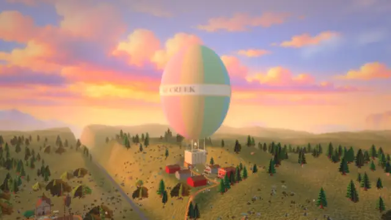
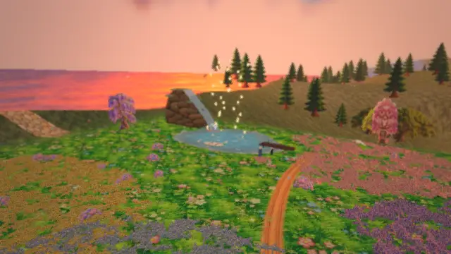

SP Creek is a hand-painted 3D valley that plays right in the browser: calm videos, exploring, building and simple play. No installs, no ads inside the world, nothing scary.
▶ Play now, freePartner with usMain street with a bakery and café, a forest with fireflies, a pony farm, a flower meadow and waterfall lake, a sunset beach, a smiling ghost town, a crystal mine and a balloon hilltop. Tap a picture to see it large.










I've run shots for Hollywood features for 21 years. SP Creek uses the same discipline: every feature is briefed, built, tested, photographed day and night, and reviewed before it's accepted. The builders are AI assistants that I direct.
128 features shipped this way in the first two weeks.
SP Creek is early and independent. I'm talking to schools, studios, children's brands, educators and investors who want a safe, beautiful world for kids, especially in Indian languages. Partner agreements are made one by one, in writing.
Talk about a partnershipMessage on LinkedIn21 years in film VFX, 7 at Sony Pictures Imageworks (The Amazing Spider-Man 2, Edge of Tomorrow, MIB 3). I know how to run a production pipeline, and SP Creek runs on one.